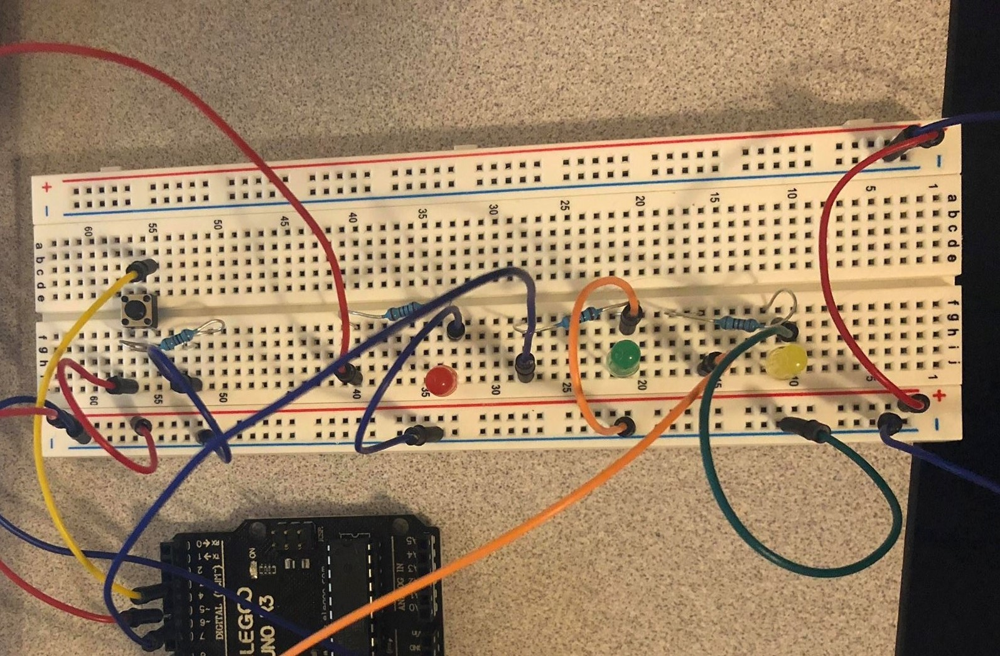
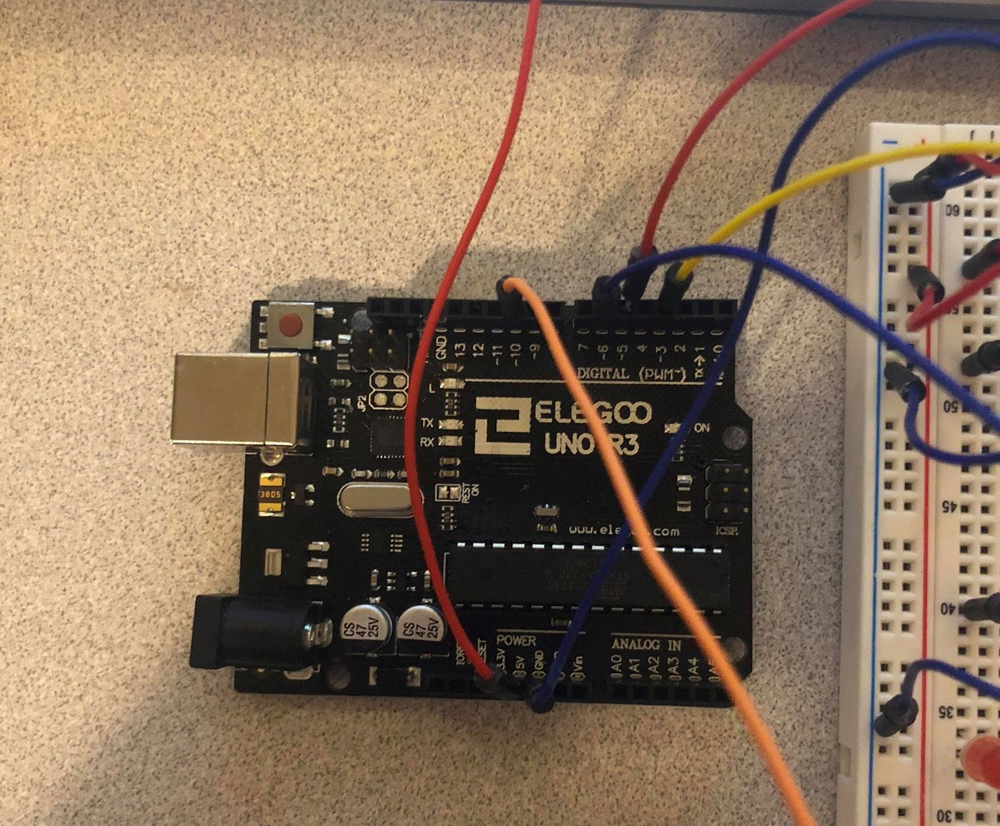
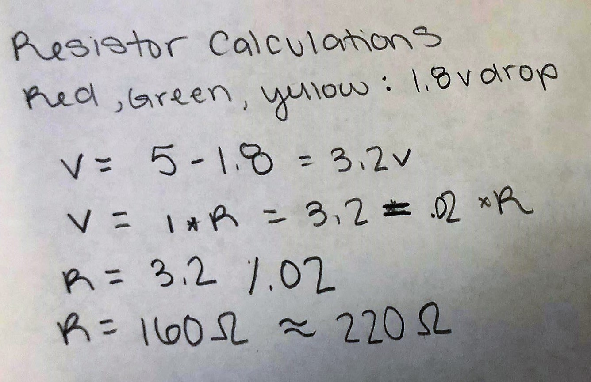
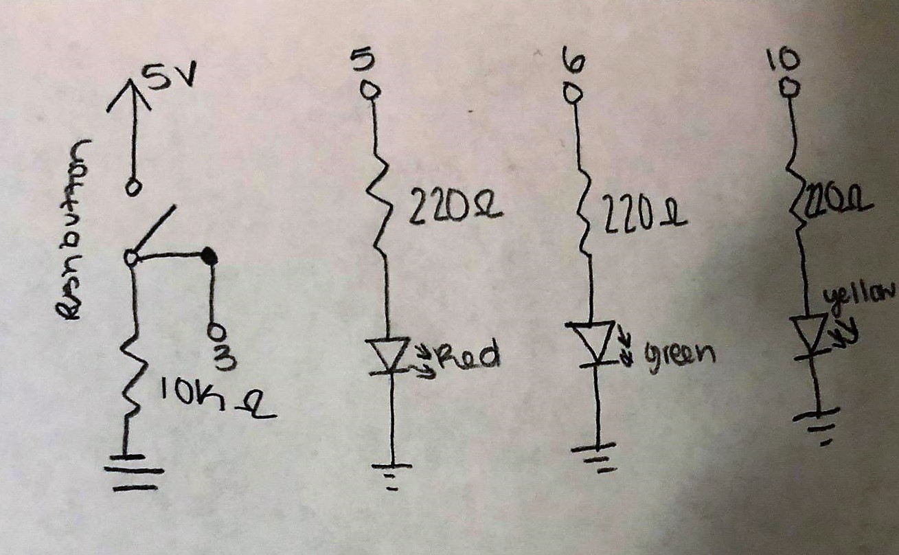
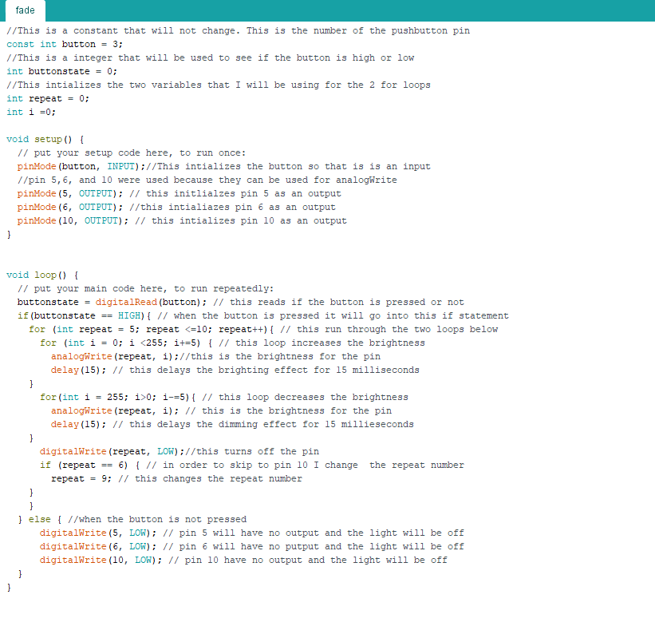

Courtney McKee's Assignment 2!
Here is all the documentation for assignment 2 which inlcudes the circuit board, schematic, a code snippet, and the circuit operation!!
Circuit
 
The image on the left is the breadboard which includes a button and three leds. The red led is conected to pin 5, green to pin 6, and yellow to pin 10. On the right is the arduino which shows that I used ground, 5V, and 4 pins (2,5,6,10). When the button is pressed on the board then the three lights brighten and then fade in in order of red, green, and yellow.
Schematic

These are the calculations for the leds. I used a red, green, and yellow light and they all have 1.8V drop. I used this number to calculate the ohms for the resistor. I got 160 ohms, but the next best resistor is 220ohms.
I used a 10K resistor for the button because I do not want there to be a short and I need there to be some resistance for the current.

This is the schematic of the breadboard and arduino. I used three different leds.
Code Snippet

This is the code that is making the lights fade when the button is pressed. I commented each line.
Cicuit Operation

This is the operation of the board. When the button is clicked three lights fade on and off in a row.